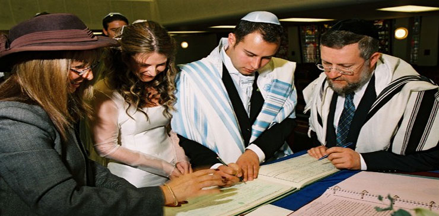

Marriages: One Name Different Versions
Jewish Wedding
A traditional Jewish wedding is full of meaningful rituals, symbolizing the beauty of the relationship of husband and wife, as well as their obligations to each other and to the Jewish people.
The following guide explains the beauty and joy of these the Jewish wedding traditions.
The Wedding Day
The dawning wedding day heralds the happiest and holiest day of one's life. This day is considered a personal Yom Kippur for the chatan (Hebrew for groom) and kallah (bride), for on this day all their past mistakes are forgiven as they merge into a new, complete soul.
As on Yom Kippur, both the chatan and kallah fast (in this case, from dawn until after the completion of the marriage ceremony). And at the ceremony, the chatan wears a kittel, the traditional white robe worn on Yom Kippur.
Sefardim do not have the custom to fast and wear a kittel.
Jewish Tradition
Chuppah
 The wedding ceremony takes place under the chuppah (canopy), a symbol of the home that the new couple will build together. It is open on all sides, just as Abraham and Sarah had their tent open all sides to welcome people in unconditional hospitality.
The wedding ceremony takes place under the chuppah (canopy), a symbol of the home that the new couple will build together. It is open on all sides, just as Abraham and Sarah had their tent open all sides to welcome people in unconditional hospitality.
The Ashkenazi custom is to have the chuppah ceremony outside under the stars, as a sign of the blessing given by God to the patriarch Abraham, that his children shall be "as the stars of the heavens" (Genesis 15:5). Sefardim generally have the chuppah indoors.
The Ashkenazi custom is that the chatan and kallah wear no jewelry under the chuppah (marriage canopy). Their mutual commitment is based on who they are as people, not on any material possessions.
The kallah follows the chatan, and both are usually escorted to the chuppah by their respective sets of parents.
Under the chuppah, the Ashkenazi custom is that the kallah circles the chatan seven times. Just as the world was built in seven days, the kallah is figuratively building the walls of the couple's new world together. The number seven also symbolizes the wholeness and completeness that they cannot attain separately.
The kallah then settles at the chatan's right-hand side.
[At this point, the Sefardic custom is that the chatan says the blessing She'hecheyanu over a new tallit, and has in mind that the blessing also goes on the marriage. The tallit is then held by four young men over the head of the chatan and kallah.]
Blessings of Betrothal (Kiddushin)
Two cups of wine are used in the wedding ceremony. The first cup accompanies the betrothal blessings, recited by the rabbi. After these are recited, the couple drinks from the cup.
Wine, a symbol of joy in Jewish tradition, is associated with Kiddush, the sanctification prayer recited on Shabbat and festivals. Marriage, called Kiddushin, is the sanctification of a man and woman to each other.
Giving of the Ring
In Jewish law, a marriage becomes official when the chatan gives an object of value to the kallah. This is traditionally done with a ring. The ring should be made of plain gold, without blemishes or ornamentation (e.g. stones) ― just as it is hoped that the marriage will be one of simple beauty.
The chatan now takes the wedding ring in his hand, and in clear view of two witnesses, declares to the kallah, "Behold, you are betrothed unto me with this ring, according to the law of Moses and Israel." He then places the ring on the forefinger of the bride's right hand. According to Jewish law, this is the central moment of the wedding ceremony, and at this point the couple is fully married.
If the kallah also wants to give a ring to the chatan, this is only done afterwards, not under the chuppah. This is to prevent confusion as to what constitutes the actual marriage, as prescribed by the Torah.
Ketubah (Marriage Contract)
 Now comes the reading of the ketubah (marriage contract) in the original Aramaic text. The ketubah outlines the chatan's various responsibilities ― to provide his wife with food, shelter and clothing, and to be attentive to her emotional needs. Protecting the rights of a Jewish wife is so important that the marriage may not be solemnized until the contract has been completed.
Now comes the reading of the ketubah (marriage contract) in the original Aramaic text. The ketubah outlines the chatan's various responsibilities ― to provide his wife with food, shelter and clothing, and to be attentive to her emotional needs. Protecting the rights of a Jewish wife is so important that the marriage may not be solemnized until the contract has been completed.
The document is signed by two witnesses, and has the standing of a legally binding agreement. The ketubah is the property of the kallah and she must have access to it throughout their marriage. It is often written amidst beautiful artwork, to be framed and displayed in the home.
The reading of the ketubah acts as a break between the first part of the ceremony ― Kiddushin ("betrothal"), and the latter part ― Nissuin ("marriage").
The Seven Blessings
The Seven Blessings (Sheva Brachot) are now recited over the second cup of wine. The theme of these blessings links the chatan and kallah to our faith in God as Creator of the world, Bestower of joy and love, and the ultimate Redeemer of our people.
These blessings are recited by the rabbi or other people that the families wish to honor.
At the conclusion of the seven blessings, the chatan and kallah again drink some of the wine.
Breaking the Glass
A glass is now placed on the floor, and the chatan shatters it with his foot. This serves as an expression of sadness at the destruction of the Temple in Jerusalem, and identifies the couple with the spiritual and national destiny of the Jewish people. A Jew, even at the moment of greatest rejoicing, is mindful of the Psalmist's injunction to "set Jerusalem above my highest joy."
In jest, some explain that this is the last time the groom gets to "put his foot down."
(In Israel, the Ashkenazi custom is that the glass is broken earlier, prior to the reading of the ketubah. Sefardim always break the glass at the end of the ceremony, even in Israel.)
This marks the conclusion of the ceremony. With shouts of "Mazel Tov," the chatan and kallah are then given an enthusiastic reception from the guests as they leave the chuppah together.
Yichud
The couple is then escorted to a private "yichud room" and left alone for a few minutes. These moments of seclusion signify their new status of living together as husband and wife.
Since the couple has been fasting since the morning, at this point they will also have something to eat.
[Sefardim do not have the custom of the yichud room; the chatan and kallah immediately proceed to the wedding hall after the chuppah ceremony.]
The Festive Meal (Seudah)
It is a mitzvah for guests to bring simcha (joy) to the chatan and the kallah on their wedding day. There is much music and dancing as the guests celebrate with the new couple; some guests entertain with feats of juggling and acrobatics.
After the meal, Birkat Hamazon (Grace After Meals) is recited, and the Sheva Brachot are repeated.
During the week following the wedding, it is customary for friends and relatives to host festive meals in honor of the chatan and kallah. This is called the week of Sheva Brachot, in reference to the blessings said at the conclusion of each of these festive meals.
If both the bride and groom are marrying for the second time, sheva brachot are recited only on the night of the wedding. The last bracha, Asher Bara, can be recited for three days.
Mazel tov!